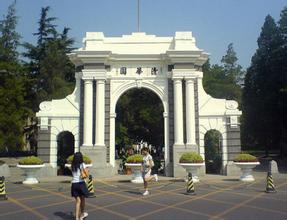

本科生招生
简要介绍清华大学"多元评价、公平录取"的招生制度

研究生招生
简要介绍清华大学研究生招生制度和招生办公室的工作职能
留学生招生
简要介绍清华大学留学生的学位项目和招生的专业
学生职业发展
简要介绍清华大学毕业生就业情况以及为学生提供职业发展教育、指导、咨询与服务情况

研究生招生
简要介绍清华大学研究生招生制度和招生办公室的工作职能
学生职业发展
简要介绍清华大学毕业生就业情况以及为学生提供职业发展教育、指导、咨询与服务情况